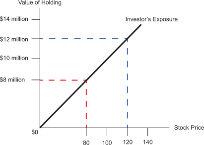
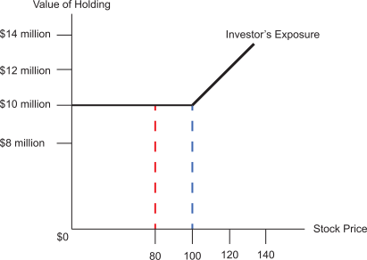

Suppose an investor owns 100,000 shares of 3M Corporation, at a current market value of $120. The investor does not wish to sell the stock, but is worried that the price will fall below $100 per share. As the chart below shows, at a price of $120 per share, the investor's holding is worth $12 million. But if the price declined by 1/3 to a price of $80, then the value of the investor's holding would fall by 1/3 as well, falling to $8 million. In other words, the investor's exposure is shown by a straight line, depicting that the investor has 100% exposure to the market; for every percentage change in the market price, the investor's holding is subject to the same percent change.

Now suppose the same investor purchased a Put Option, the terms of which allowed the investor to sell the stocks at any time prior to the option's expiration date for $100 per share. The diagram below shows how the investor's exposure has changed. No longer is the exposure a straight line. Now, no matter how low the price goes, the investor has locked in the value of the holding at $10 million. For example, if the market price of the stock falls to $80 per share (red dashed line), the investor can exercise the put and still have $10 million.

This strategy eliminates most of the downside risk, while allowing the investor to continue to receive the income on the asset and to participate in its growth. Since income and growth are not curtailed, it does not trigger the constructive sale rules.
Much like a term insurance policy, owning the put option gives the investor protection against downward pressure on the stock price. The expense associated with that protection is the cost of the option itself. However, the stock and the put are considered to be a tax straddle. As a result, the gain on the put will be short-term capital gains regardless of the holding period, and the loss on the put will be deductible under the straddle rules only to the extent that it exceeds the unrecognized gain on the concentrated position.
Listed below are some advantages to this strategy as well as some of the considerations a client should be aware of.